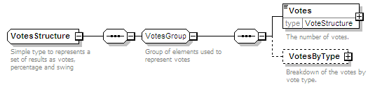

| diagram |  | ||
| namespace | http://www.aec.gov.au/xml/schema/mediafeed | ||
| children | Votes VotesByType | ||
| used by | |||
| annotation |
|
||
| source | <xs:complexType name="VotesStructure"> <xs:annotation> <xs:documentation>Simple type to represents a set of results as votes, percentage and swing</xs:documentation> </xs:annotation> <xs:sequence> <xs:group ref="VotesGroup"/> </xs:sequence> </xs:complexType> |